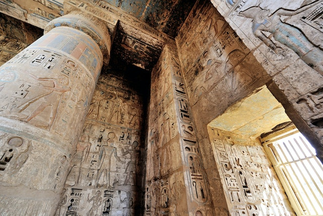

Egito Antigo
História do Egito Antigo

O Egito Antigo foi formado a partir da mistura de diversos povos, a população era dividida em vários clãs, que se organizavam em comunidades chamadas nomos. Estes funcionavam como se fossem pequenos Estados independentes.
Por volta de 3500 a.C., os nomos se uniram formando dois reinos: o Baixo Egito, ao Norte e o Alto Egito, ao Sul. Posteriormente, em 3200 a.C., os dois reinos foram unificados por Menés, rei do alto Egito, que tornou-se o primeiro faraó, criando a primeira dinastia que deu origem ao Estado egípcio.
Começava um longo período de esplendor da civilização egípcia, também conhecida como a era dos grandes faraós.
Sociedade egípcia
A antiga sociedade egípcia estava dividida de maneira rígida e nela praticamente não havia mobilidade social.
No topo da sociedade encontrava-se o Faraó e sua imensidão de parentes. O faraó era venerado como um verdadeiro deus, pois era considerado como o intermediário entre os seres humanos e as demais divindades. Por isso, era uma monarquia teocrática, ou seja, um governo baseado nas ideias religiosas.
Abaixo do faraó e de sua família vinham as camadas privilegiadas como sacerdotes, nobres e funcionários. Na base da pirâmide social egípcia estavam os não privilegiados que eram artesãos, camponeses, escravos e soldados.